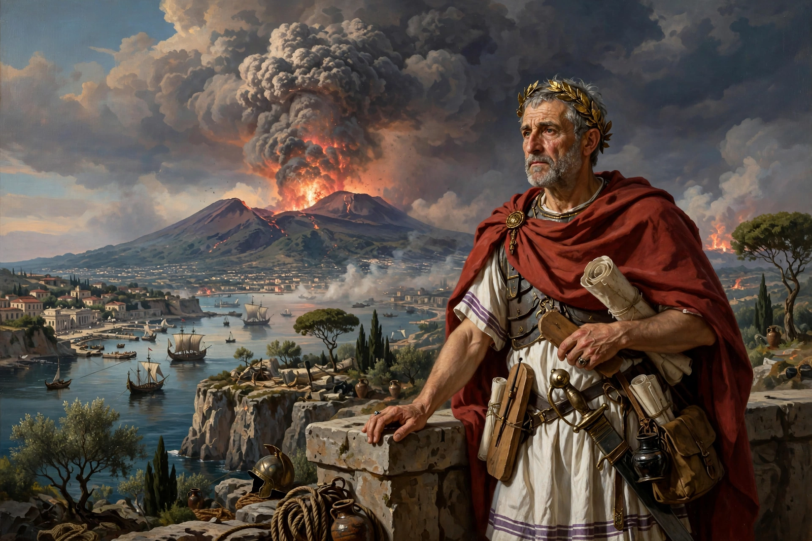

| Born | 23/24 AD, Novocomum (Como), Italy |
|---|---|
| Died | 25 August 79 AD (aged ~55), Stabiae, during the eruption of Mount Vesuvius |
| Occupation | Author, naturalist, military and naval commander |
| Language | Latin |
| Notable work | Naturalis Historia (Natural History) |
| Relatives | Pliny the Younger (nephew and adopted son) |
Gaius Plinius Secundus (AD 23/24 – 25 August 79), called Pliny the Elder, was a Roman author, naturalist, and natural philosopher, and a naval and army commander of the early Roman Empire. He is best known for his Naturalis Historia (Natural History), the largest single work to survive from the Roman Empire to the modern day and a model for the modern encyclopaedia.

Pliny died investigating the eruption of Vesuvius in AD 79.
Born at Novocomum in northern Italy, Pliny served as a cavalry officer in Germany, governed provinces including Hispania Tarraconensis, and became a close adviser to the emperor Vespasian. His nephew Pliny the Younger describes his relentless work habits — rising before dawn, having books read to him at meals and in the bath, and taking notes on everything. In AD 79, commanding the fleet at Misenum, he sailed across the Bay of Naples to observe the eruption of Mount Vesuvius and rescue survivors; he died at Stabiae, likely overcome by fumes or a heart attack, while the eruption destroyed Pompeii and Herculaneum.
The Natural History, published in AD 77–79, runs to 37 books covering astronomy, geography, anthropology, zoology, botany, medicine, agriculture, mineralogy and art history. Pliny claimed to have drawn 20,000 facts from some 2,000 volumes by 100 authors. Indiscriminately mixing careful observation with travellers' tales of dog-headed men and monstrous races, it remained the standard authority on natural knowledge for over 1,500 years and is an invaluable source for Roman technology and art — including material on lost painting, sculpture and the works of artists praised by Cicero's generation and earlier.